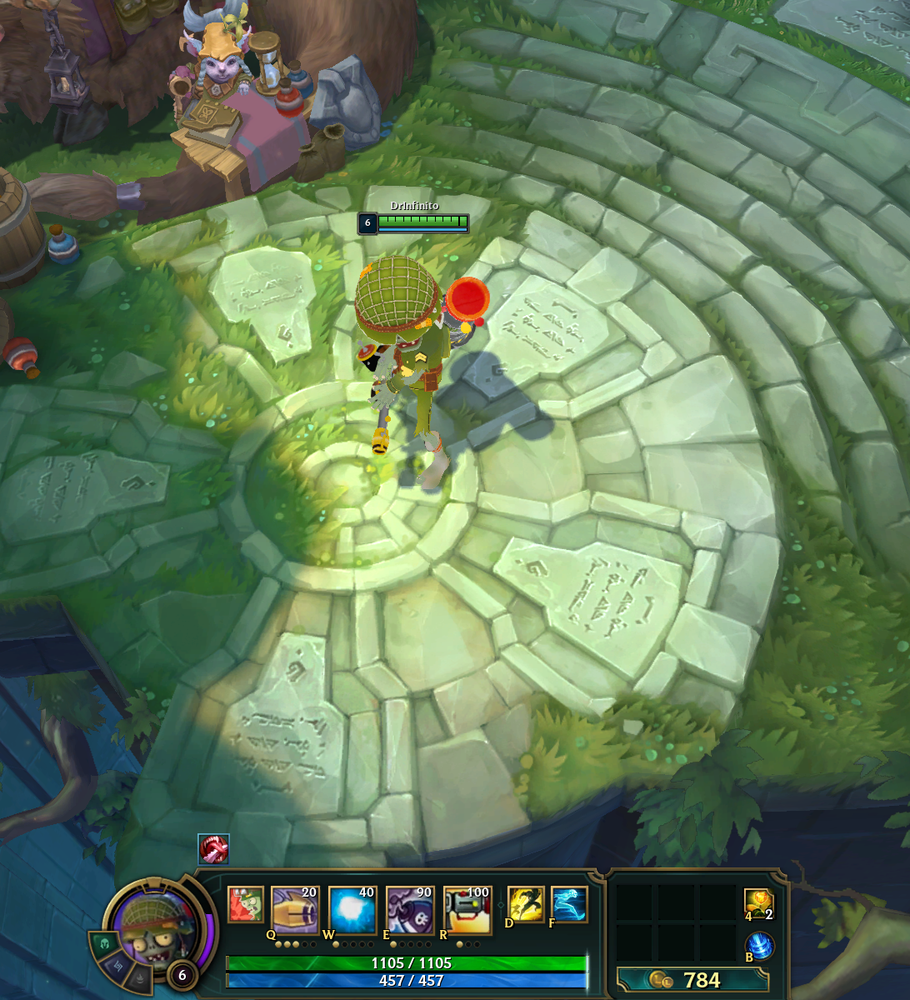
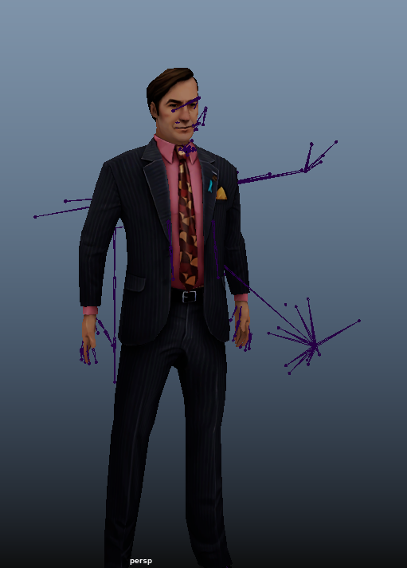
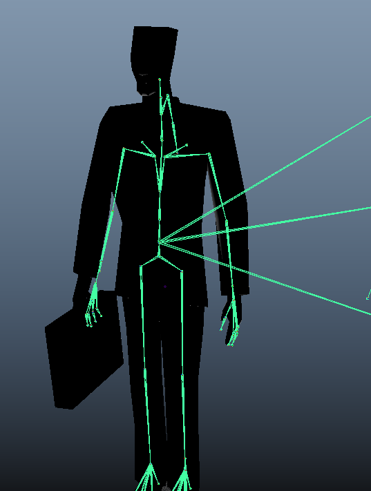
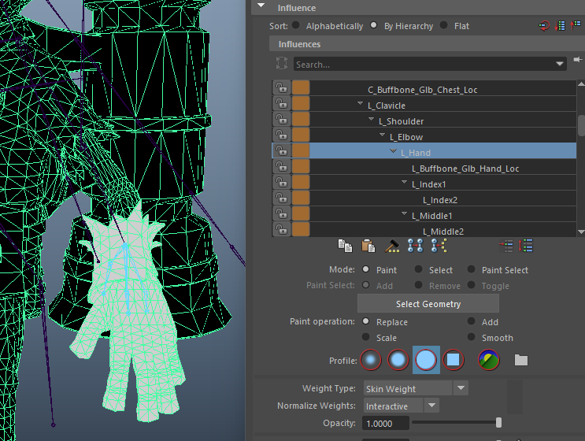
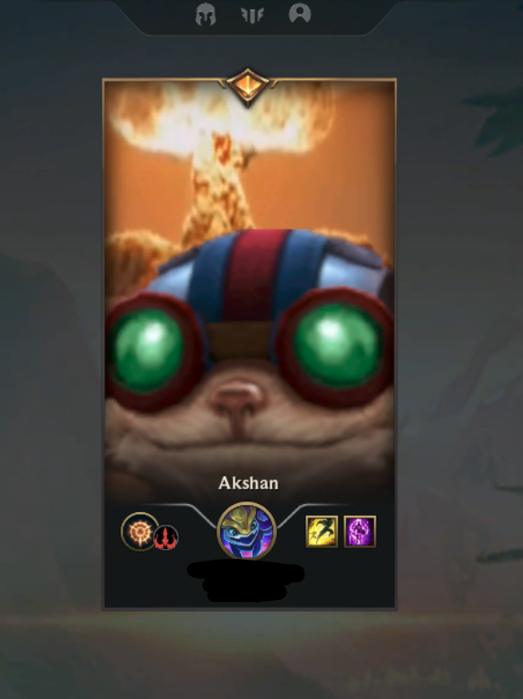

Screenshots & Media




Project Overview
This is a compilation of League of Legend modifications, that modify the playable character ingame, or other elements of the gameplay.
The 3D models were created using Maya, while other assets were made using GIMP and Audacity.
These mods are popular, gaining over 100,000 views combined.
Features and Tools used
Key Features
- Includes 3D models rigged to exisiting skeletons and animations
- Modification of the HUD, including player and skill icons
- New sounds and particles effects to complement the modification
Technologies Used
- Developed using various tools, including Maya, GIMP and Audacity
- Posted on forums and Youtube
Development Process
These modifications were developed through learning different skills gradually. Firstly replacing sounds, then icons, then 3D model. The development of these modifications were motivated by the community built around them, including some streamers.
Reflections
Working on this project exposed me to various specialised softwares, which allowed me to broaded my horizon. This project also led me to deal with questions and requests from the people who used my modifications, which meant I had to help them out in whatever way I could.